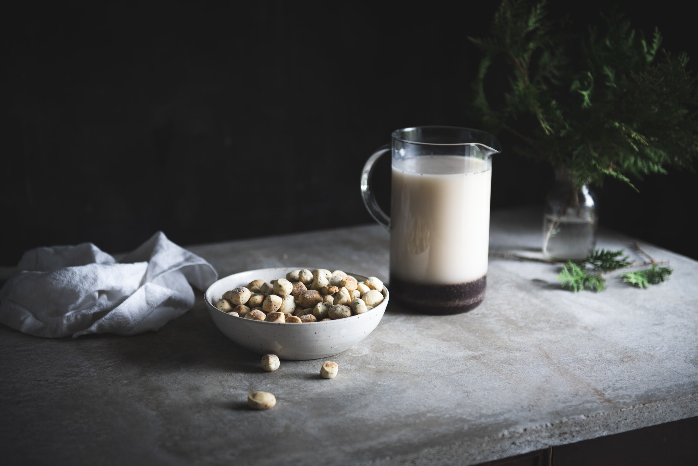

This non-alcoholic Lithuanian drink is hugely popular across the country and while sometimes used as an alternative to traditional dairy milk, is more often consumed as a dessert. Usually drunk on Christmas Eve paired with Kūčiukai (Christmas cakes), poppy seed milk plays an important part in Lithuanian festive traditions.
Meal prep time : 5 minutes
Servings : 1